Chrome CUD Helperの使い方
このページは、Chrome拡張機能Chrome CUD Helperの使用方法を解説しています。
目次
このツールについて
Chrome CUD Helperは、カラーユニバーサルデザインを取り入れたフロントエンド実装の実現を目的としたエンジニア向け開発支援ツールです。
このツールは、以下の機能を持ちます。
- 色覚異常シミュレーション
- 色比較ツール
インストール方法
-
このリンクからGitHubリポジトリページにアクセスして、右側にあるReleasesからLatestと表示されているバージョンを選択してください。
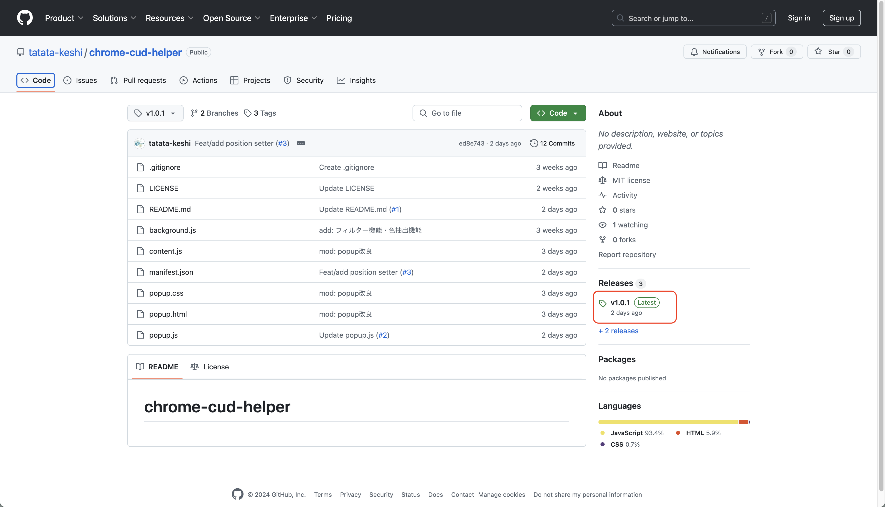 -
Source Code (Zip)を選択して、zipファイルをダウンロードしてください。
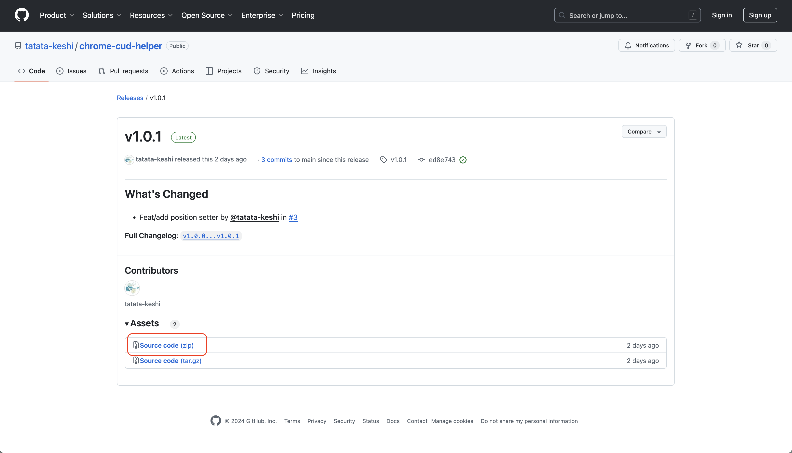 -
ダウンロードしたzipファイルを解凍してください。
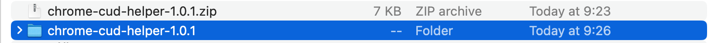 -
Google Chromeを開き、右上のメニューからExtensions ⇛ Manage Extensionsを選択してください。
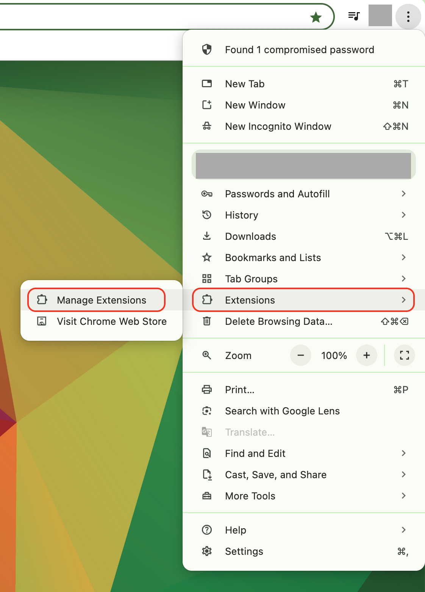 -
Load Unpackedを選択してください。もし表示されない場合は右上のトグルボタンでDeveloper modeを有効にしてください。
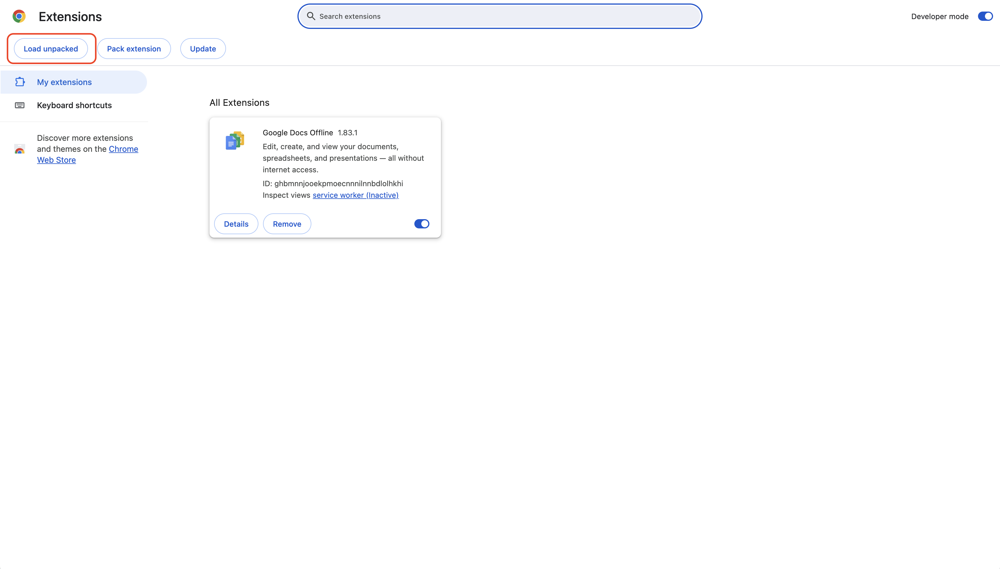 -
解凍したフォルダを選択してください。
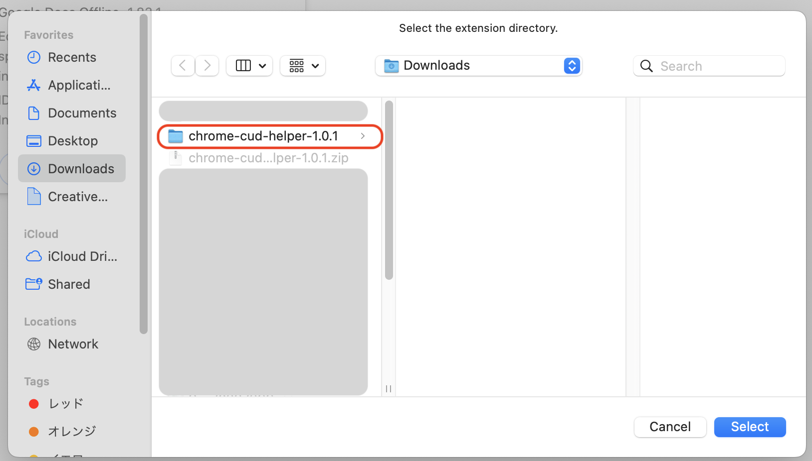 -
拡張機能一覧にChrome CUD Helperが表示されていればインストール完了です。
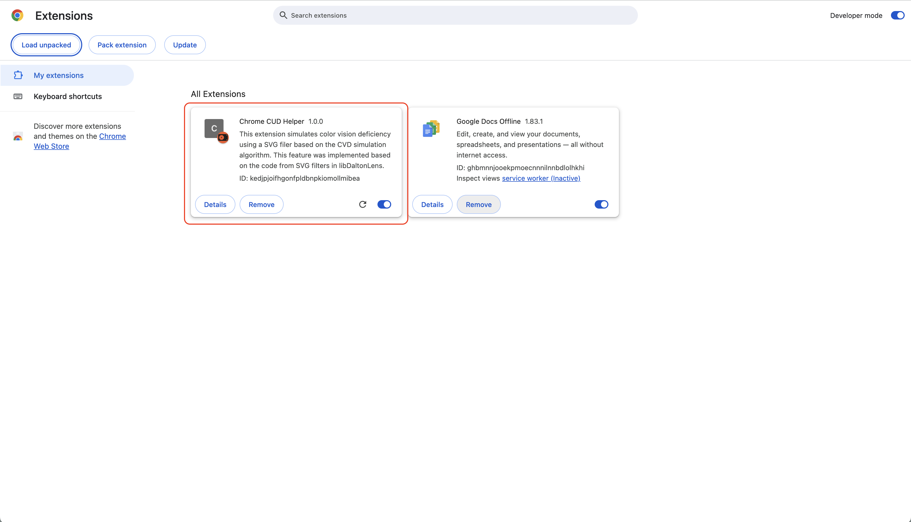
色覚異常シミュレーション機能
この機能は、フィルターを適用し色覚異常者視点で見た画面の様子を再現します。
使い方
- Chrome CUD Helperのアイコンをクリックしてください。
-
「Protanopia（1型2色覚）」「Deuteranopia（2型2色覚）」「Tritanopia（3型2色覚）」のいずれかを選択してください。
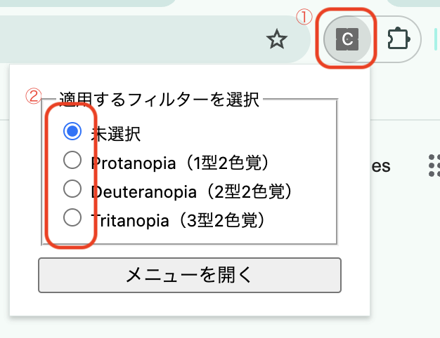 -
このページでフィルターを適用してみてください。下のカラーバーの色が変化します。
- 「未選択」を選ぶとフィルターが解除されます。
色比較ツール
この機能では画面上の複数の要素を選択し、その要素の文字色と背景色のフィルター適用前後の色を表示します。これにより、カラーユニバーサルデザインに準じた色の組み合わせを見つけることができます。
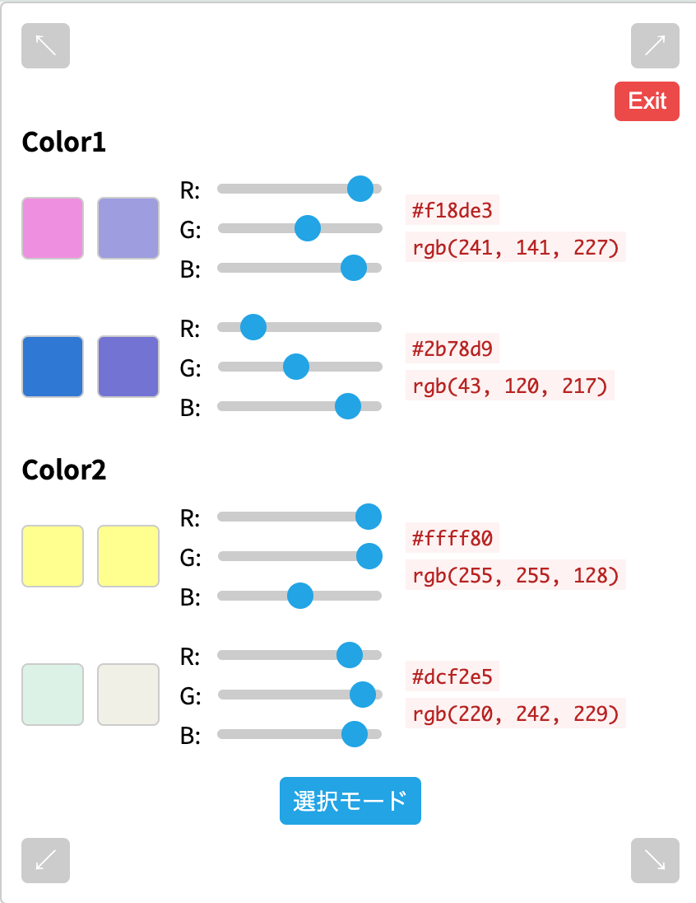使い方
-
Chrome CUD Helperのアイコンをクリックします。そして「メニューを開く」を選択します。するとオーバーレイが表示されます。
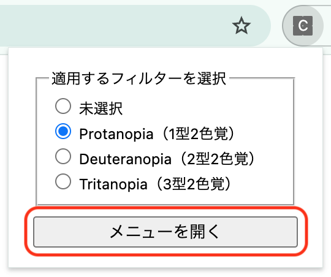 -
オーバーレイ上の「選択モード」ボタンを押してください。すると、画面上の要素を選択できるようになります。
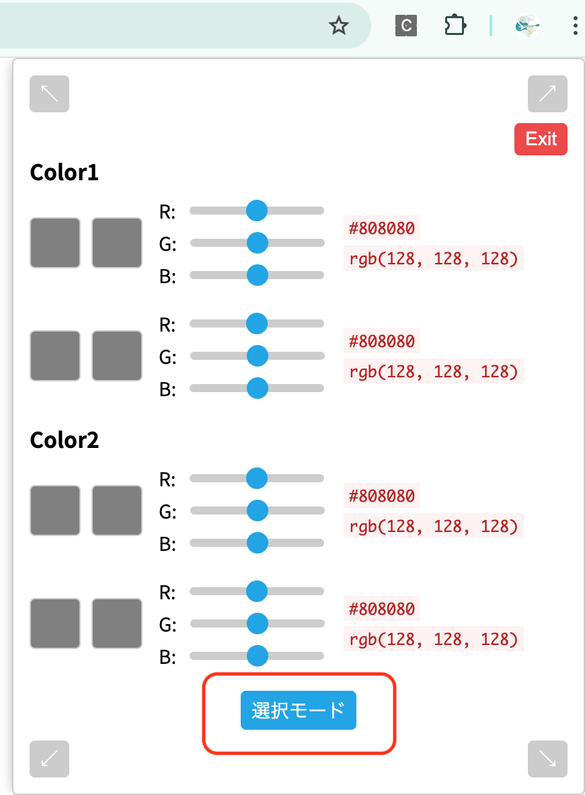 -
色を比較したい要素をクリックしてください。すると、その要素の文字色と背景色が表示されます。
試しに下の「Click Me 1」と書かれた図形をクリックしてください。下の画像のようになるはずです。
Click Me 1
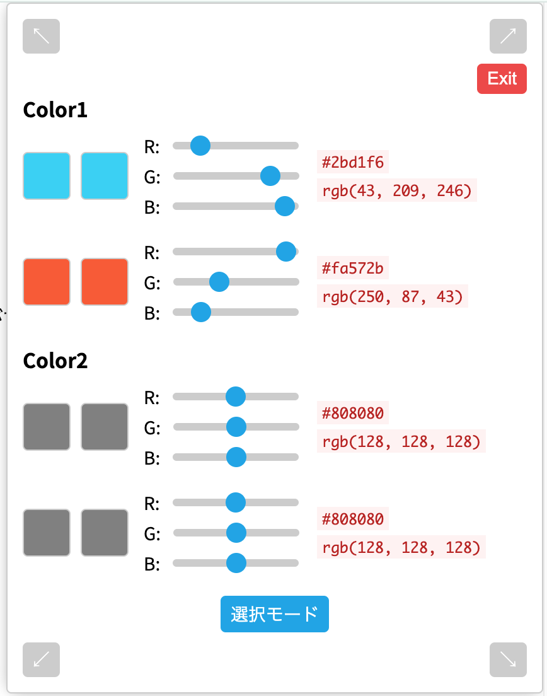 -
他の要素も同様にクリックしてください。複数の要素を比較することができます。
試しに下の「Click Me 2」と書かれた図形をクリックしてください。下の画像のようになるはずです。
Click Me 2
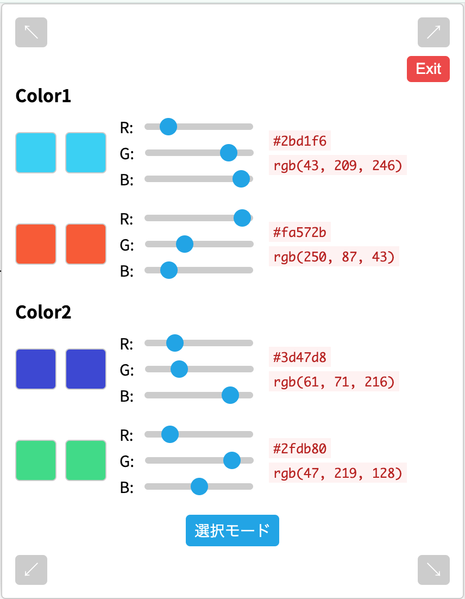 -
この状態で「色覚以上シミュレーション」機能でフィルターを適用すると、フィルター適用前後の色を比較することができます。
例えば、「Protanopia（1型2色覚）」を選択すると、下の画像のようになります。
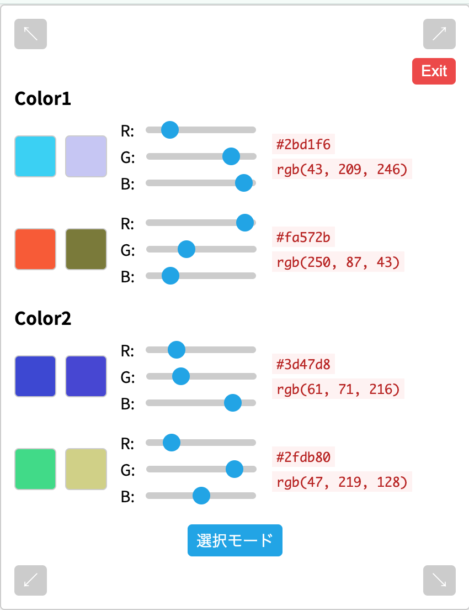 -
R,G,Bそれぞれのスライダーを動かすことで、フィルター適用前後の色を調整することができます。
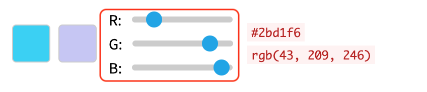